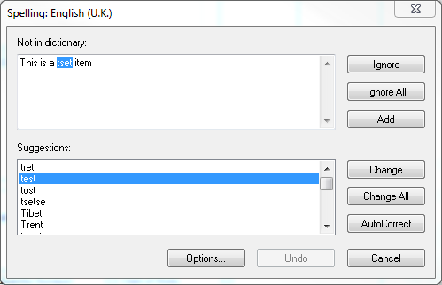
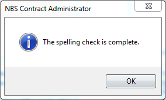
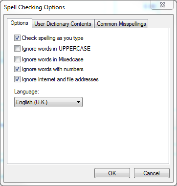

Spell Checker |
Before issuing a form, it will be useful for the user to have the software check for any spelling mistakes - this can be done via the Spell Checker function. While the form is open, go to Tools > Spell Check... in the menu.
If the text contains any unrecognised words, the following dialogue box will appear with the first incorrect word displayed and highlighted in the 'Not in dictionary:' text box:

Please Note: if there are no errors, the following dialogue box will appear instead:

A list of possible alternatives will be displayed at the bottom of the dialogue box in the Suggestions section. Simply select to correct suggestion then click on Change button. To make the change in the whole work section, click the Change All button. The spell check will move to the next query.
If a word is displayed which requires no changes, click the Ignore button. If the word is repetitively displayed, clicking the Ignore All button will ignore it completely. For common typing mistakes, click the Autocorrect button.
The dictionary can be expanded to include words which have not been included in the main NBS dictionary - this may be relevant to specialist types of work. To add a word to the dictionary, make sure it is selected and click on the Add button.
To undo any changes, click the Undo button. To cancel the spell check, click the Cancel button.
To change the current settings of the Spell Checker, click the Options button from the Spell Checker window. Alternatively, go to Tools > Spell Check Options... in the menu. A new dialogue box will appear allowing various options to be altered under 3 tabs:

Options tab
Within the Options tab, the user can tick check boxes next to the following points:
User Dictionary Contents tab
This tab will show a list of all the words added to the dictionary by the user. The user can also manually add or delete words from this tab.
Common Misspellings tab
If a user makes a common mistake on a particular word, they can add it to the dictionary so the correct spelling will be shown instead of the
misspelling.
Within the Common Misspellings tab, insert the incorrect spelling in the top left Incorrect Spelling text box
and then the correct spelling in the top right Correct Spelling text box. Press OK to close the window -
the amendment will be made each time the incorrect spelling is entered.
See Also:
Frequently Asked Questions